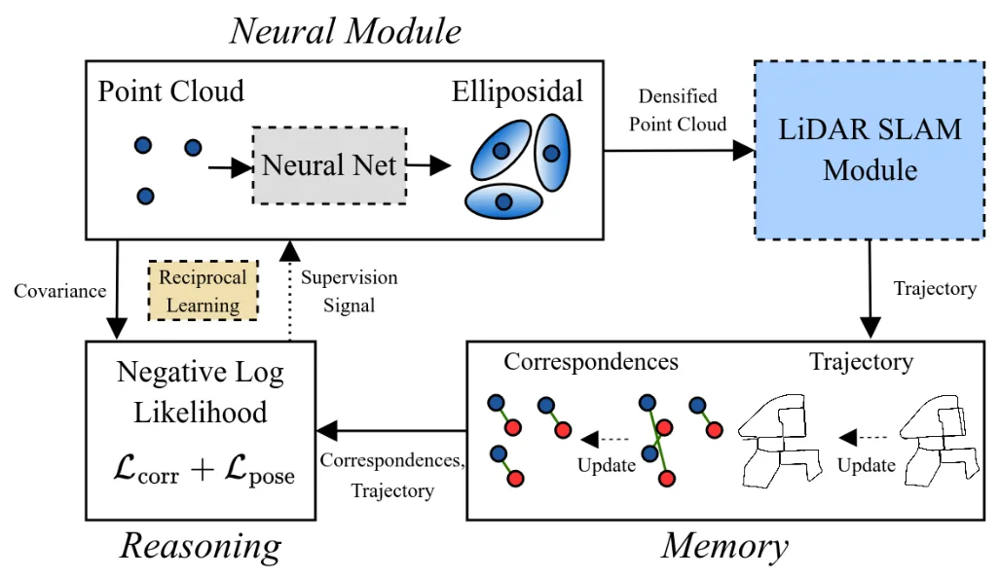
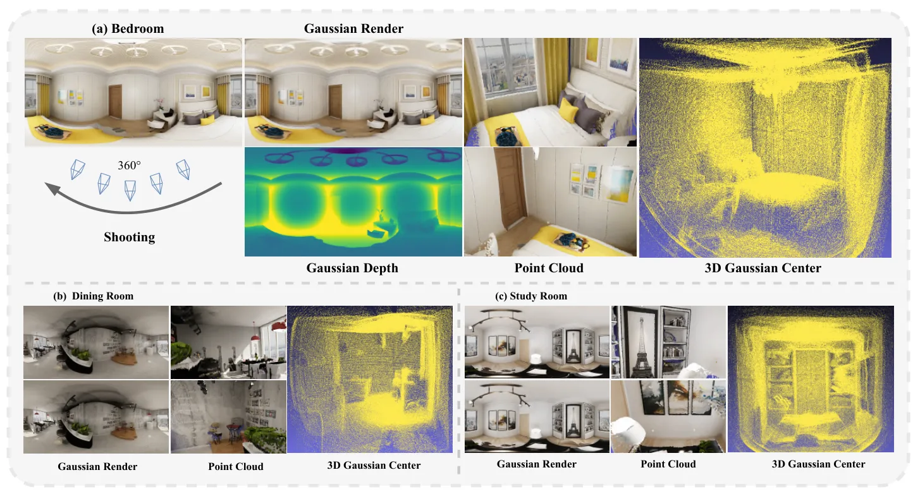
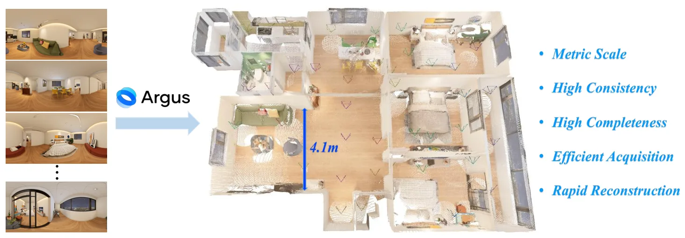
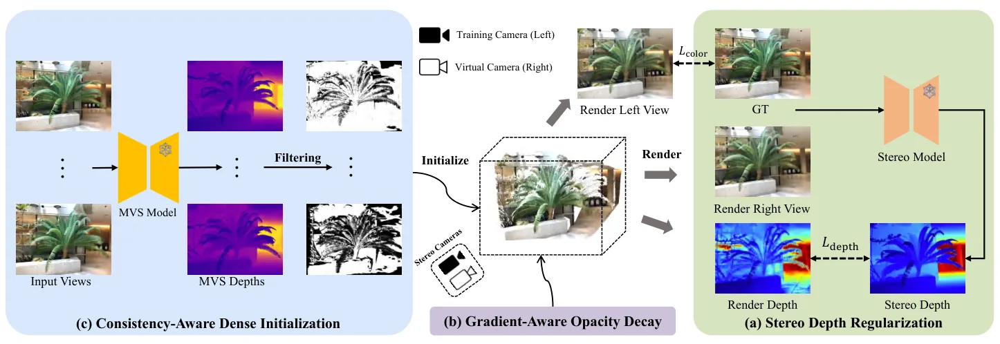
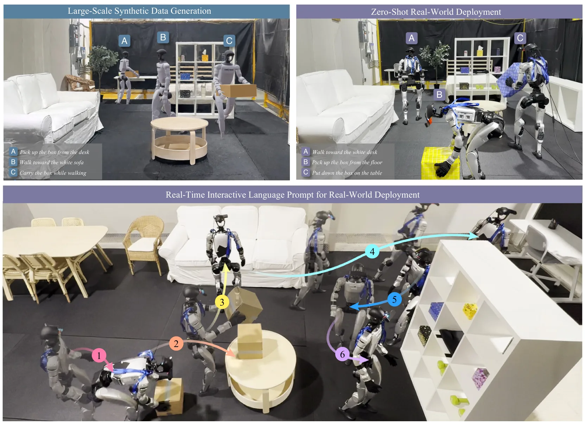
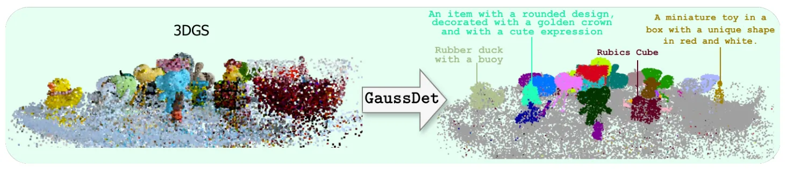
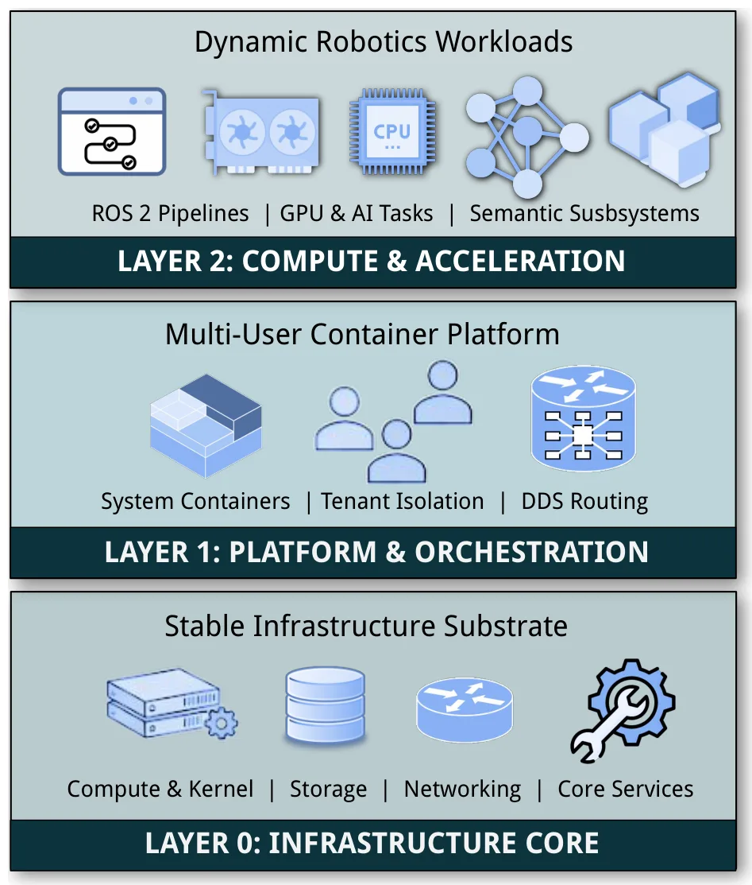

新论文 · 日期 2026-06-29 · score 16 · cs.RO
作者：Jiwoo Kim, Jinwoo Lee, Woojae Shin, Giseop Kim
评分 10/10
LiDAR SLAM自监督学习局部几何点云配准协方差KITTI
一句话工作总结：把局部协方差/对应关系/轨迹一致性做成 LiDAR SLAM 自监督闭环，目标是在稀疏或低线束点云中获得更可靠的几何权重。
LiDAR SLAM 依赖局部协方差、点对应和表面结构等几何量，但传统管线通常手工估计这些量，在稀疏区域或低分辨率 LiDAR 上容易噪声大、不稳定。该文提出自监督框架，把每个点显式表示为 Gaussian distribution，并用 covariance 描述局部几何；无需密集几何标签或真值位姿，而是从预测协方差、对应关系和 SLAM 轨迹的一致性中构造监督。学习到的几何再反馈给 LiDAR SLAM，形成“…
LiDAR simultaneous localization and mapping (SLAM) relies on local geometric quantities such as covariances, correspondences, and surface structures. However, most existing pipelines rely on hand-crafted estim…
新论文 · 日期 2026-06-29 · score 15 · cs.CV
作者：Sicheng Yu, Dongxu Shen, Beizhen Zhao, Guanzhi Ding
评分 9.6/10
3DGS-SLAM单目 SLAM大尺度户外长程跟踪地图压缩Gaussian Splatting
一句话工作总结：KiloGS-SLAM 同时处理长程单目跟踪漂移和 3DGS 地图内存膨胀，是 3DGS-SLAM 走向大尺度户外应用的重要候选。
单目 3DGS-SLAM 扩展到公里级户外环境时，同时面临长时程 pose tracking 脆弱和大规模 Gaussian map 内存开销过高两个瓶颈。KiloGS-SLAM 用 motion-adaptive hybrid tracking 处理前者：根据条件触发在 Essential matrix、PnP 和按需 foundation model rescue 之间切换，以应对几何退化和灾难性漂移；建图侧则…
Scaling monocular 3D Gaussian Splatting (3DGS) SLAM to kilometer-level outdoor environments poses two tightly coupled challenges: fragile long-term pose tracking and excessive memory overhead during large-scal…

新论文 · 日期 2026-06-29 · score 13 · cs.CV
作者：Jianqiang Li, Liumei Zhang, Wenjia Guo, Tianlong Feng
评分 8.5/10
全景重建单图 3D3DGS前馈网络室内场景快速重建
一句话工作总结：单图全景到 3DGS 的秒级前馈重建适合快速室内场景资产生成，但要服务机器人地图还需验证几何尺度与遮挡补全可靠性。
FastPano3D 面向从单张 panoramic image 快速生成可渲染 3D Gaussian 表示。与依赖多视图监督或每场景优化的 NeRF/3DGS 方法不同，它采用轻量特征编码器、自适应 Gaussian sampling 和 point-cloud-guided refinement，在没有 test-time optimization 的情况下处理全景图的等距柱状投影畸变和空间特征非均匀问题。作…
Recent advances in 3D scene reconstruction have highlighted the intricate trade-offs among rendering quality, inference efficiency, and data dependency. To address the challenge of rapidly reconstructing detai…

新论文 · 日期 2026-06-29 · score 12 · cs.CV
作者：Xi Li, Linyuan Li, Yan Wu, Tong Rao
评分 8.2/10
全景重建度量尺度相机位姿深度估计点云重建RGB-D 数据集
一句话工作总结：Argus 通过大规模全景 RGB-D 数据和 covisibility 锚点选择，把全景重建推向可评测的度量相机位姿、深度和点云输出。
全景 feed-forward 3D 重建长期缺少大规模 RGB-D 训练数据和可靠 metric supervision。该文提出 Realsee3D：包含 10K 室内场景、299K panoramic viewpoints 和精确度量标注的混合数据集；并提出 Argus 网络进行 metric panoramic 3D reconstruction。在 Realsee3D 的稀疏无序采集设置下，坐标锚选择不佳…
Metric feed-forward 3D reconstruction for panoramic data remains under-explored due to the lack of large-scale panoramic RGB-D training data. We present Realsee3D, a hybrid dataset of 10K indoor scenes (1K rea…

新论文 · 日期 2026-06-30 · score 11 · cs.CV
作者：Wenhao Yuan, Yiyuan Ge, Deli Cai
评分 7.8/10
3DGS稀疏视角立体先验深度正则尺度一致性ECCV 2026
一句话工作总结：用立体先验替代纯单目深度约束，有望缓解稀疏视角 3DGS 的尺度歧义和几何过拟合问题。
稀疏视角 3DGS 因几何约束不足容易过拟合；现有 monocular depth prior 又存在尺度歧义和跨视角不一致。StereoGS 通过在优化过程中构造 virtual stereo pairs，并利用 foundation stereo model 施加 Stereo Depth Regularization，以引入绝对尺度和双目一致结构。同时，它用 Consistency-Aware Dense I…
3D Gaussian Splatting (3DGS) has achieved remarkable success in real-time novel view synthesis, yet it suffers from severe overfitting under sparse-view settings due to insufficient geometric constraints. Whil…

新论文 · 日期 2026-06-30 · score 10 · cs.RO, cs.AI, cs.GR, eess.SY
作者：Yen-Jen Wang, Jiaman Li, Sirui Chen, Takara E. Truong
评分 7.3/10
3DGS人形机器人移动操作合成数据视觉语言运动Unitree G1
一句话工作总结：VLK 展示了从 3DGS 重建环境自动合成人形机器人视觉-语言-运动监督的路线，是重建场景服务机器人训练的代表信号。
感知驱动的人形机器人移动操作需要把第一视角观测和任务指令映射到全身运动，但缺少同时包含 egocentric image、language command 和 robot-compatible kinematic trajectory 的大规模数据。VLK 管线使用 3D Gaussian Splatting 重建 metric-scale 室内环境，再利用 privileged scene information…
Perception-based humanoid loco-manipulation requires connecting egocentric observations and task instructions to whole-body motion. Learning this mapping requires synchronized egocentric images, language comma…

新论文 · 日期 2026-06-30 · score 8 · cs.CV
作者：Jameel Hassan, Yasiru Ranasinghe, Vishal Patel
评分 7/10
语义 3DGS开放词表指代表达实例分割2D 检测器具身智能
一句话工作总结：GaussDet 用多视角 2D 检测投票给 3D Gaussian 实例赋语义，适合语义 3DGS 地图和开放词表机器人场景理解。
3D Gaussian Splatting 需要语言驱动的开放词表理解来支持 embodied AI 等应用。现有方法常把 CLIP dense features 蒸馏到场景表示中，但实例分组依赖预设实例数或 bottom-up grouping，且 CLIP 对复杂空间推理和指代表达能力有限。GaussDet 改用离散的开放词表 2D detector 和 referring expression detecto…
3D Gaussian Splatting (3DGS) has emerged at the forefront of 3D scene reconstruction. Extending 3DGS with language-driven, open-vocabulary understanding has gained significant attention for real-world applicat…

新论文 · 日期 2026-06-29 · score 5 · cs.RO
作者：Ambrosio-Cestero, Gregorio, Galindo Andrades, Cipriano
评分 5.8/10
机器人系统容器化ROS 2边缘计算3D SLAM 部署语义建图
一句话工作总结：CSAR 偏系统工程，但为多人机器人团队部署 3D SLAM、语义建图和共享 GPU/边缘资源提供了可复现架构参考。
机器人应用越来越依赖嵌入式设备、边缘服务器和云资源组成的分布式计算基础设施，多用户团队在依赖隔离、兼容性、可复现性、共享专用硬件和跨异构环境部署方面面临复杂挑战。CSAR 是面向机器人团队和 edge-cloud continuum 的容器中心架构，结合 LXC/LXD system container、ROS 2/DDS 通信和三层 edge infrastructure，将计算组织为硬件亲和、持久且与实验负载解…
Robotic applications increasingly rely on distributed computational infrastructures that combine embedded devices, edge servers, and cloud resources. This evolution, together with the collaborative nature of r…